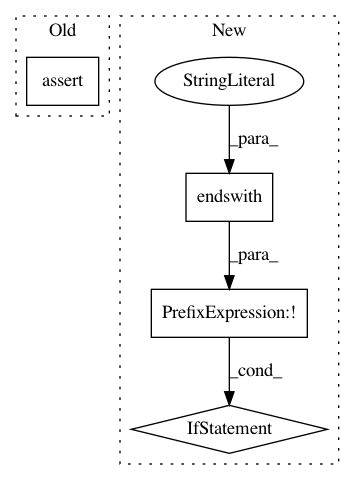

66a06524eba0b22d14204baeb2ca6d4c9db7d1d0,scripts/semantic_types.py,,convert_coq_to_nltk_type,#Any#,245
Before Change
type_sig = coq_type_list[3:]
type_ids = []
for i, type_item in enumerate(type_sig):
assert (i % 2 == 1) == (type_item == "->")
if type_item.startswith("Entity"):
type_ids.append("e")
elif type_item.startswith("Prop"):
type_ids.append("t")
After Change
"Entity", "e").replace(
"Prop", "t").replace(
"Event", "v")
if not nltk_type_str.startswith("(") or not nltk_type_str.endswith("("):
nltk_type_str = "(" + nltk_type_str + ")"
// Add pre-terminals (necessary for NLTK, if we convert to CNF).
nltk_type_str = re.sub(r"([evt])", r"(N \1)", nltk_type_str)
nltk_type_tree = tree_or_string(nltk_type_str)
nltk_type_tree.chomsky_normal_form(factor="right")
nltk_type_str = remove_labels_and_unaries(nltk_type_tree).replace(
In pattern: SUPERPATTERN
Frequency: 3
Non-data size: 4
Instances
Project Name: mynlp/ccg2lambda
Commit Name: 66a06524eba0b22d14204baeb2ca6d4c9db7d1d0
Time: 2017-05-12
Author: pascual@nii.ac.jp
File Name: scripts/semantic_types.py
Class Name:
Method Name: convert_coq_to_nltk_type
Project Name: pantsbuild/pants
Commit Name: 791be481c4a0102042dc0a502b08ba5cc6a85987
Time: 2020-06-29
Author: 14852634+Eric-Arellano@users.noreply.github.com
File Name: src/python/pants/backend/python/rules/inject_init_test.py
Class Name: InjectInitTest
Method Name: assert_injected
Project Name: KhronosGroup/NNEF-Tools
Commit Name: f6c5fda0653e8c00b2dbe85cecb1280eeaa2feaa
Time: 2019-05-23
Author: tamas.danyluk@aimotive.com
File Name: nnef_tools/io/nnef/nnef_io.py
Class Name:
Method Name: read